Superlinear Academy
Redesign The Visual Identity Of An AI Learning Community
Superlinear Academy is a learning community where long-term capability comes before short-term output. It serves builders, operators and thinkers who value depth over speed.
The previous visual identity lacked structure and scalability, making it difficult to maintain consistency across digital platforms.
This project redefines the brand system through a modular visual language and simplified typography, which improves clarity, hierarchy, and recognizability across interfaces.
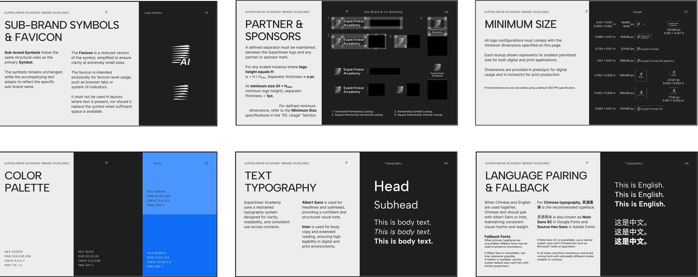
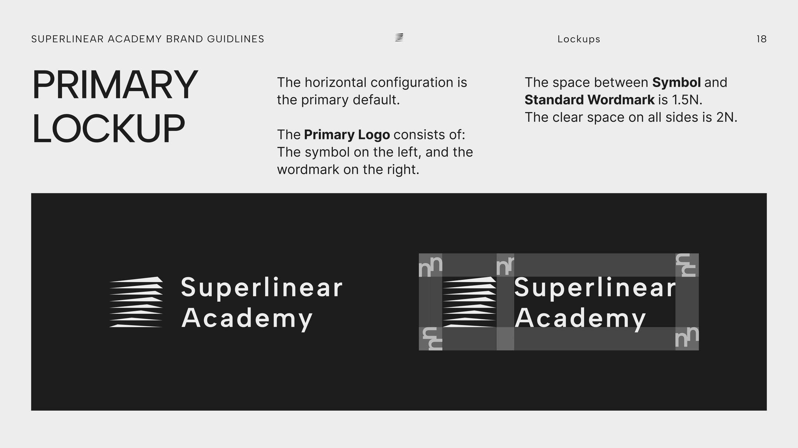
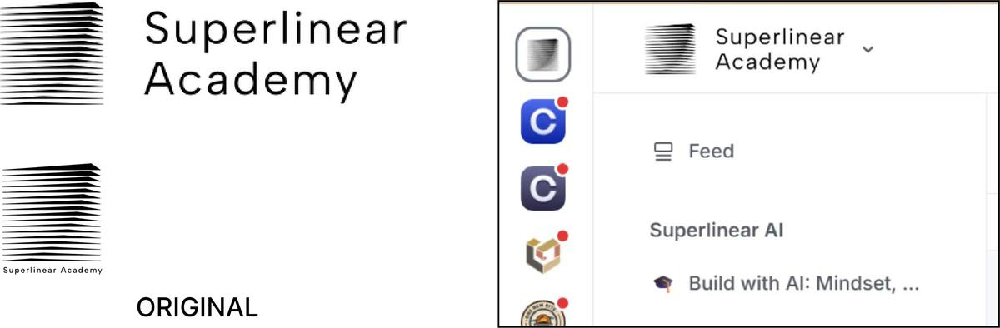
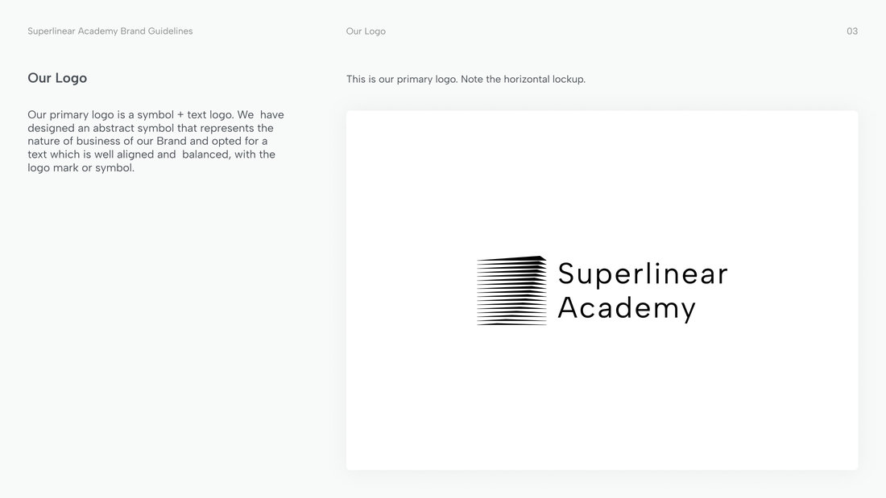
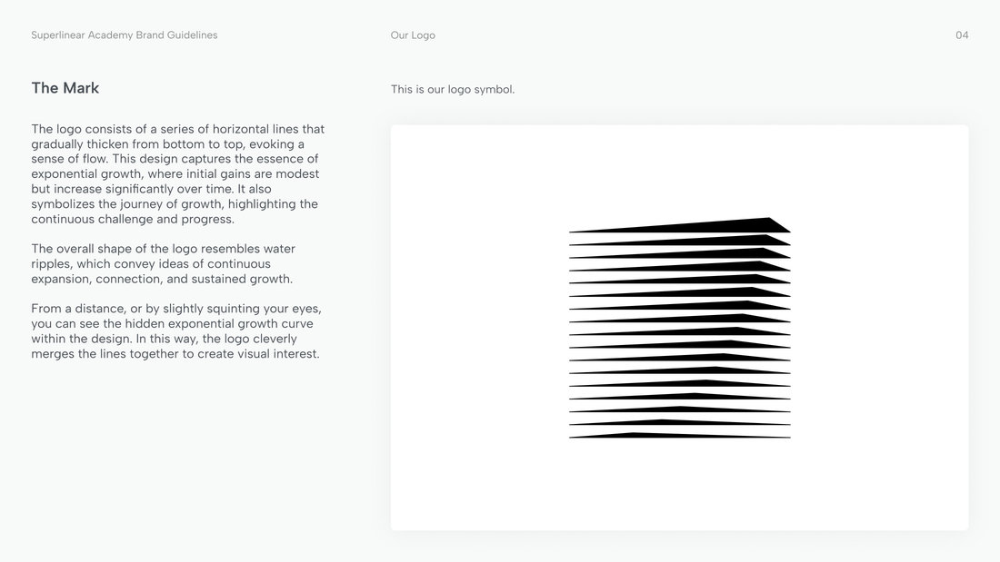
Challenges
The previous visual identity lacked visual balance and scalability. The relationship between the icon and typography was inconsistent, making the logo appear unstable across different contexts.
At smaller sizes, the icon became difficult to recognize, especially in digital environments such as favicons and social media.
Additionally, the identity lacked a structured visual system, making it difficult to maintain consistency across different applications.
The two pages above come from the original brand guideline and show the identity before the redesign: the logo and its mark.
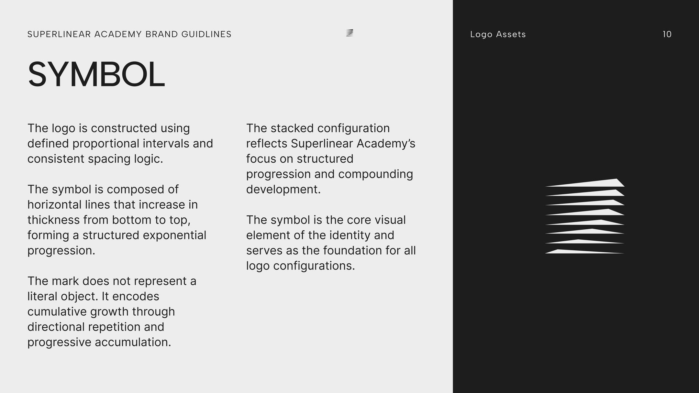
Symbol
The symbol is built from horizontal lines that grow thicker from bottom to top, a structured exponential progression drawn on fixed proportional intervals.
It does not show a literal object. It stands for cumulative growth, the community’s focus on structured progression and compounding development, and every logo configuration starts from it.
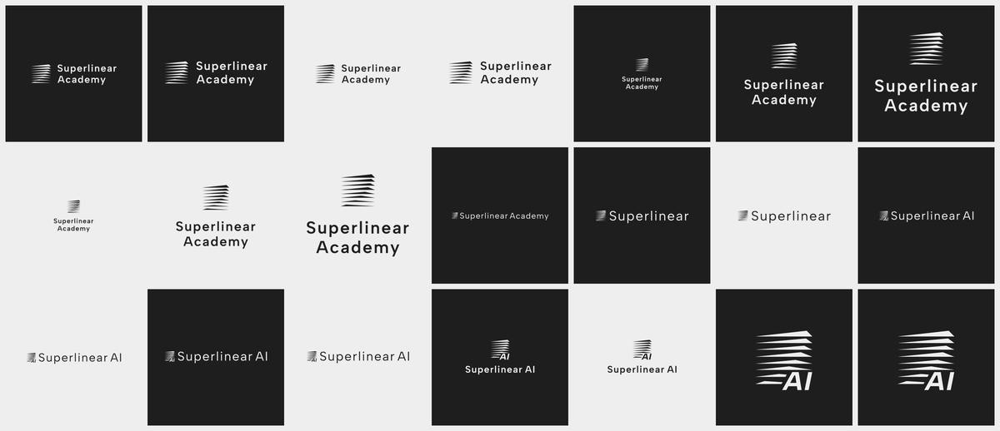
Visual Identity System
The redesigned identity builds around clear geometry and typographic hierarchy. The logo structure improves visual balance and recognizability, while a simplified colour palette ensures clarity across digital media.
Together, these elements create a flexible system that supports consistent communication across platforms.
The system has 30 logo configurations, delivered as SVG, PNG, JPG, PDF and EPS files for screen and print.
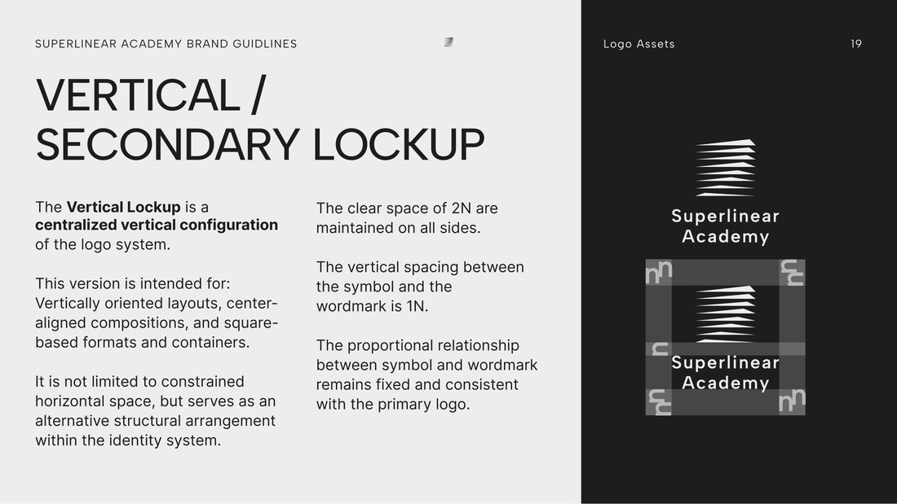
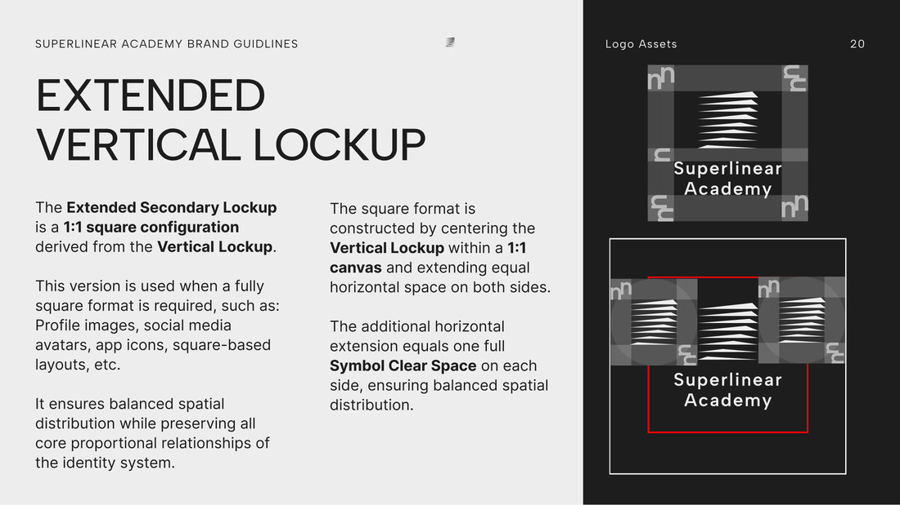
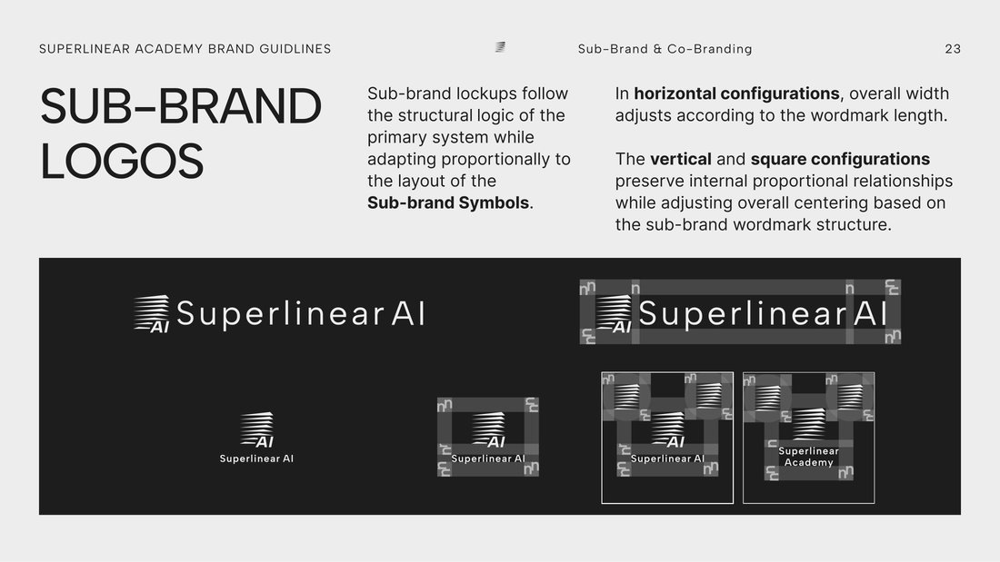
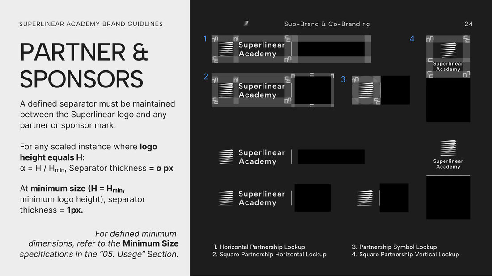
Lockups
Besides the horizontal primary lockup, the set has a vertical secondary lockup and an extended version on a 1:1 square for avatars, app icons and other square formats.
Sub-brands such as Superlinear AI follow the same structure, and partner and sponsor lockups keep a separator whose thickness scales with the logo.
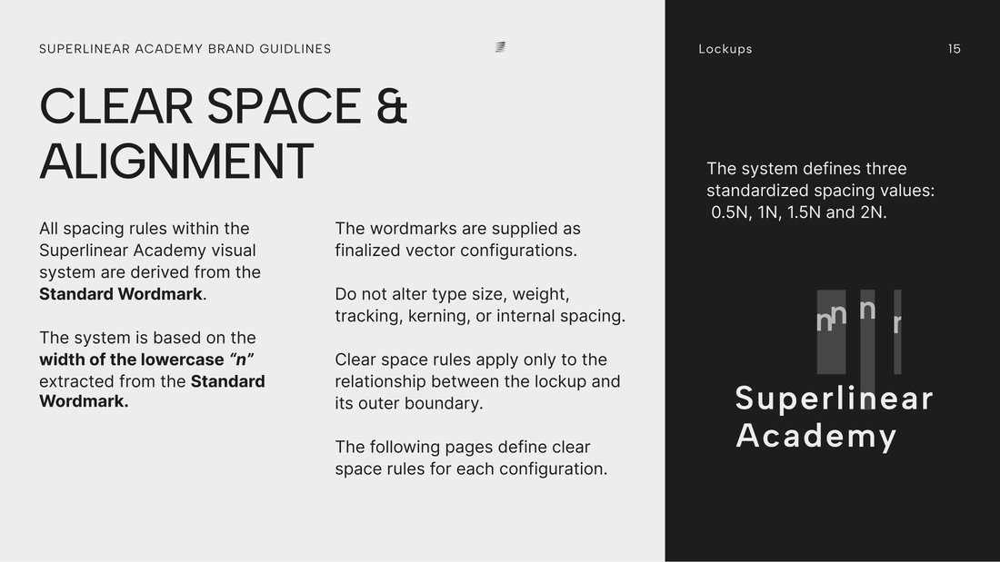
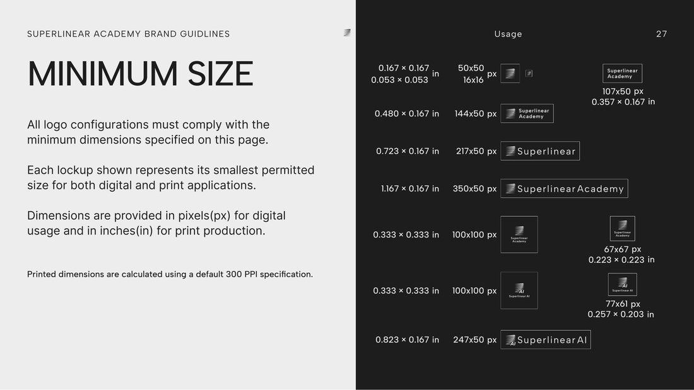
Spacing
Every spacing rule comes from one unit, N, the width of the lowercase n in the standard wordmark. Clear space comes in steps of 0.5N, 1N, 1.5N and 2N. In the primary lockup the symbol sits 1.5N from the wordmark, with 2N of clear space on every side.
Each lockup also has a minimum size, given in pixels for screens and in inches for print.
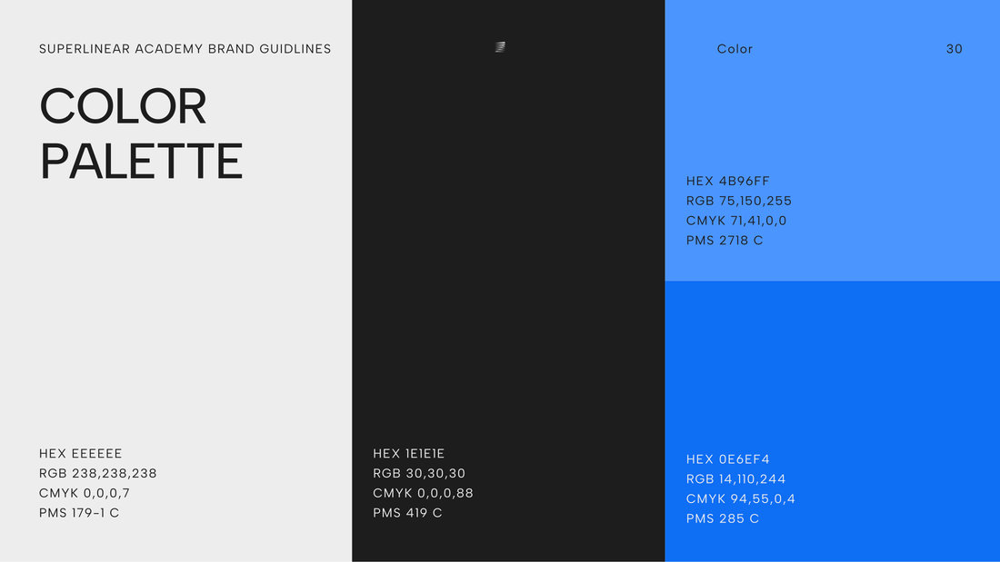
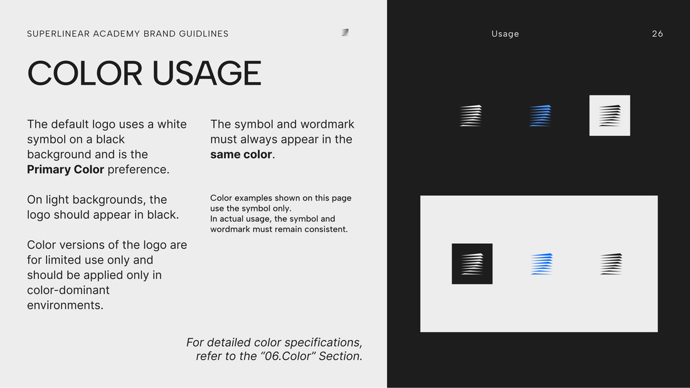
Colour
The core palette is neutral: Primary 1, #1E1E1E, and Primary 2, #EEEEEE. The logo is white on Primary 1 by default and turns black on light backgrounds.
Two blues, Secondary 1, #0E6EF4, and Secondary 2, #4B96FF, are for limited use, only where a setting calls for colour.
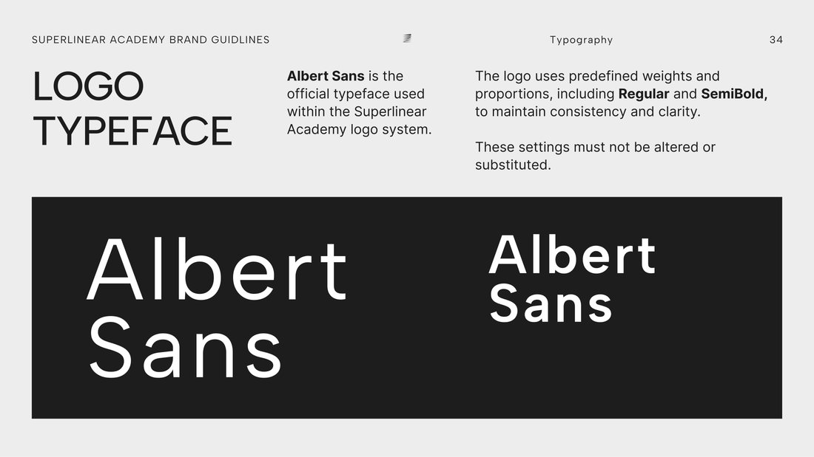
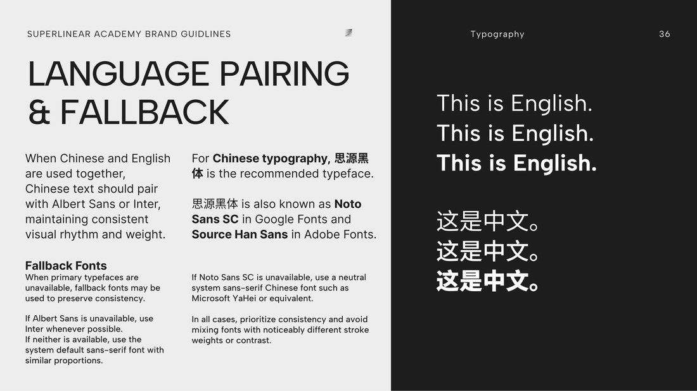
Typography
Albert Sans, in Regular and SemiBold, sets the logo, headlines and subheads. Inter sets body text.
For Chinese, the guide recommends Noto Sans SC, also published as Source Han Sans, paired with Albert Sans or Inter.
Logo Motion: Early Iterations And Final Iteration
Scan, Breathe and Cone Rotate are early iterations from the first round. Turn is the final iteration.
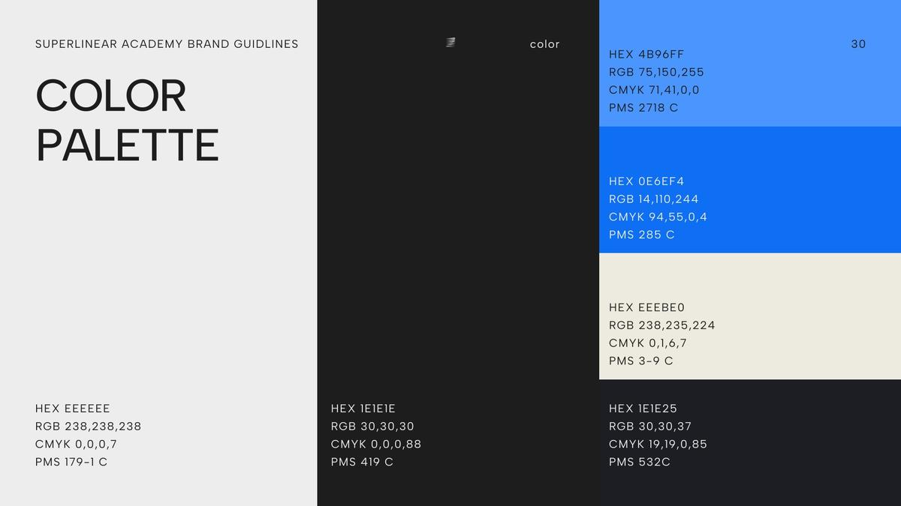
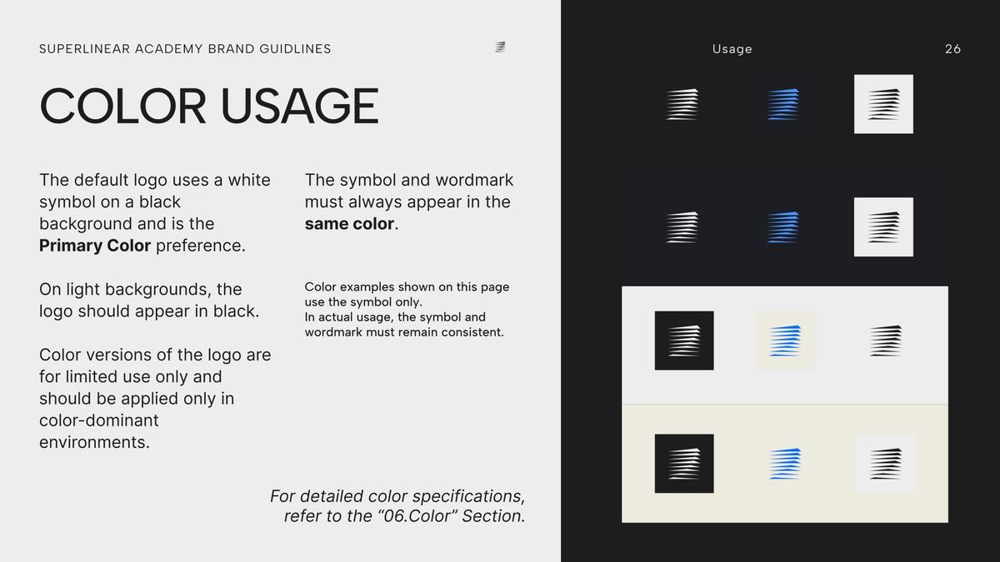
Process
Early colour drafts. The first palette added a beige and a charcoal, and the usage page tested the logo on twelve backgrounds. The final guide keeps the blues and the dark grey.